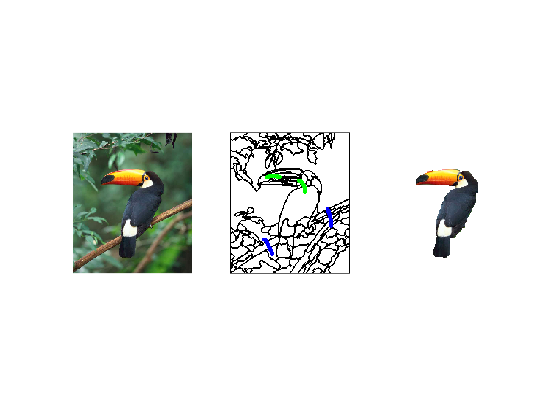
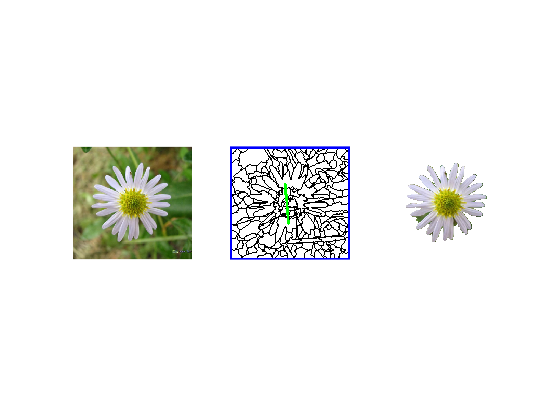

ECE 417 Project: Replication of Maximal Similarity Based Region Merging (MSRM)
Hui Wu
20515692
Contents
Problem Formulation
One usecase of image segmentation is to separate an object from the background in an image. There are many solutions to segment an image. However, for natural images, full segmentation is often difficult.
The goal of this method is to use minimally labeled information from a user to merge like regions together.
Proposed Solution
To begin, an image and its segmentation is prepared by using an existing segmentation method (in the case of the paper, mean-shift is used).
Afterwards, the regions are labelled with green or blue lines indicating "object" and "background" segments respectively.
Using the user labelled data, regions are placed into one of three sets:
- (Object)
- (Background)
- (Unmarked)
Each colour channel is then uniformly quantized into 16 levels (4096 total bins). Then the histogram of each region can be calculated.
To define a score between adjacent regions, the Bhattacharrya coefficient is used (higher score = higher similarity)

Merging Stage 1
For every region , check its adjacent regions, . If is the most similar region adjacent to , merge the regions. Therefore ,
This process is repeated until no more merging occurs ( does not increase and does not decrease)
Merging Stage 2
Identical to Stage 1 except both regions and are ( will decrease in size)
Merging stages 1 and 2 are repeated until no merging occurs in either.
Object Extraction
After merging stops, merges with , therefore all regions are either in or . The object is then extracted by using the regions in as a mask on the original image.
Data Sources
- The images and segmentations used are the images used by the authors in the original paper.
- Each image is tested with labels following the original paper and another to test the robustness of the algorithm/implementation
Solution
Below are snippets of code that come from auxillary functions used in the implementation.
Similarity Calculation
h1 = sqrt(regions(rgn1).hist/regions(rgn1).area); h2 = sqrt(regions(rgn2).hist/regions(rgn2).area);
adjMatrix(rgn1, rgn2) = h1' * h2;
Function used to mark two regions as "to be merged"
mark() will always choose the region with a lower id as the base for merging. This way, when we iterate through each region in order, we will hit the
function [regions, marked] = markRegions(similarities, regions, regionCount, regionType)
marked = 0;
% Get adjacency information
[i, j, v] = find(similarities); % Check adjacency matrix for adjacent regions.
for k = 1:size(i, 1)
rgn1 = i(k);
rgn2 = j(k); % If the region is not in our desired set, 'regionType' or the
% adjacent region is not in the unmarked set (N), skip this set of
% regions.
if (regions(rgn1).type ~= regionType || rgn1 == rgn2 || regions(rgn2).type ~= 0)
continue;
end max = -1;
maxIdx = -1; % Find the most similar region adjacent to the adjacent region.
for l = 1:size(i, 1)
if j(l) == i(l)
continue;
end if j(l) == rgn2 && v(l) > max
max = v(l);
maxIdx = i(l);
end
end % If the most similar region is our initial region, mark the regions for merging
if rgn1 == maxIdx
regions = mark(rgn1, rgn2, regions, regionCount);
marked = 1;
end
end
endMerging Regions
All merged regions have their region index set to the new region index
Regions have 3 fields that are merged:
- hist: the two regions' histograms are summed (element-wise)
- type: the only valid types are 0 or 1 in regions that are merged. Regions of that represent the object (2, ) are never merged
- area: the two regions' area are summed
idxs = find(imageRegions==j); % Find all indices of region j newImageRegions(idxs)=cnt; % Populate them with the new region index newRegions(cnt).hist = newRegions(cnt).hist + regions(j).hist; newRegions(cnt).type = max(newRegions(cnt).type, regions(j).type); newRegions(cnt).area = newRegions(cnt).area + regions(j).area;
Housekeeping
clc; clear; close all;
Constants
DIRECTORY = 'test/'; IMG_SUFFIX = '.bmp'; SEG_SUFFIX = '_seg.png'; MARK_SUFFIX = '_marked_paper.png'; BIN_SIZE = 256/16; % 16*16*16 = 4096 bins % image_names = {'bird', 'dogs', 'flower', 'fruit', 'mona', 'monkey', 'starfish', 'starfish2', 'tiger', 'woman'}; image_names = {'bird', 'dogs', 'flower'};
Run MSRM segmentation for each image set
for (name = image_names)
image = imread(strcat(DIRECTORY, name{1,1}, IMG_SUFFIX));
imageSeg = imread(strcat(DIRECTORY, name{1,1}, SEG_SUFFIX));
imageMark = imread(strcat(DIRECTORY, name{1,1}, MARK_SUFFIX));
h = size(image, 1);
w = size(image, 2);
Label Regions
labeled = bwlabel(imbinarize(imageSeg(:,:,1))); % Labels connected components in a 2D image imageRegions = labeled; % Region boundaries are set to region '0' % Replace these with the value of an adjacent region while (isempty(find(imageRegions == 0, 1)) == 0) for (i = 1:h) for (j = 1:w) if (labeled(i, j) == 0) g = labeled(max(1, i-1):min(h, i+1), max(1, j-1):min(w, j+1)); vals = find(g ~= 0); if (size(vals, 1) > 0) imageRegions(i, j) = g(vals(1)); end end end end labeled = imageRegions; end
User Marked Image
Takes a user-marked image and assigns pixels to a set
- 2: Object ()
- 1: Background ()
imageMarked = zeros(h, w);
g = zeros(1,1,3);
b = zeros(1,1,3);
g(:,:,:) = [0 255 0]; % Green
b(:,:,:) = [0 0 255]; % Blue
for (i = 1:h)
for (j = 1:w)
if (imageMark(i, j, :) == g)
imageMarked(i, j) = 2;
elseif (imageMark(i, j, :) == b)
imageMarked(i, j) = 1;
end
end
end
Image Quantization
imageQuantized = size(h, w);
for (i = 1:h)
for (j = 1:w)
r = floor(double(image(i, j, 1))/BIN_SIZE);
g = floor(double(image(i, j, 2))/BIN_SIZE);
b = floor(double(image(i, j, 3))/BIN_SIZE);
% Store each combination (4096) in a unique bin
binNumber = r + BIN_SIZE*g + BIN_SIZE*BIN_SIZE*b;
imageQuantized(i, j) = max(binNumber, 1);
end
end
Intialize regions Struct Array
Each entry in regions stores properties of a region
- Region Type: 0: non-marked (), 1: background (), 2: object ()
regionCount = max(imageRegions(:));
binCount = max(imageQuantized(:));
% Initialize Regions
for (rgnIdx = 1:regionCount)
regions(rgnIdx).stat = 0; % Used when marking a region for merging
regions(rgnIdx).type = 0;
regions(rgnIdx).area = 0;
regions(rgnIdx).hist = zeros(binCount, 1);
end
% Populate Regions
for (i = 1:h)
for (j = 1:w)
rgnIdx = imageRegions(i, j);
bin = imageQuantized(i, j);
regions(rgnIdx).hist(bin) = regions(rgnIdx).hist(bin) + 1;
regions(rgnIdx).area = regions(rgnIdx).area + 1;
regions(rgnIdx).type = max(regions(rgnIdx).type, imageMarked(i, j));
end
end
Similarities
Store adjacency information and replace values with a similarity score
adjMatrix = createAdjacencyMatrix(imageRegions, regions, regionCount, h, w);
similarities = calculateSimilarities(adjMatrix, regions);
while 1
merged = 0;
Merging Stage 1
Merge members of (type = 1) with members of (type = 0)
Repeat until no merging occurs.
while 1 [regions, marked] = markRegions(similarities, regions, regionCount, 1); if marked == 0 break; else merged = 1; end % Merge Regions [imageRegions, regionCount, regions] = mergeRegions(imageRegions, regionCount, regions); % After merging, recalculate adjacencies and similarities with remaining regions adjMatrix = createAdjacencyMatrix(imageRegions, regions, regionCount, h, w); similarities = calculateSimilarities(adjMatrix, regions); end
Merging Stage 2
Merge members of (type = 0) with other members of
Repeat until no merging occurs.
Identical to Stage 1 except we look for type == 0 instead of type == 1
while 1 [regions, marked] = markRegions(similarities, regions, regionCount, 0); if marked == 0 break; else merged = 1; end % Merge Regions [imageRegions, regionCount, regions] = mergeRegions(imageRegions, regionCount, regions); % After merging, recalculate adjacencies and similarities with remaining regions adjMatrix = createAdjacencyMatrix(imageRegions, regions, regionCount, h, w); similarities = calculateSimilarities(adjMatrix, regions); end
Exit Condition
If no merging occurs in either stage, merging stage is complete
if (merged == 0) break; end
end
Object Extraction
extractionMask = zeros(size(imageRegions));
for (i = 1:regionCount)
if regions(i).type ~= 1
extractionMask(find(imageRegions == i)) = 1;
end
end
idxs = find(extractionMask == 0);
extractedImage = image;
for (i = 1:3)
tmp = extractedImage(:, :, i);
tmp(idxs) = 255;
extractedImage(:, :, i) = tmp;
end
Visualization of Results
figure;
subplot(1, 3, 1); imshow(image);
subplot(1, 3, 2); imshow(imageMark);
subplot(1, 3, 3); imshow(extractedImage);
  end
Analysis & Conclusions
Results
- The algorithm described in the paper works well on most of the test images
- The results of the paper were not replicated with complete accuracy (this could be due to the markers being estimated from the paper)
Conclusions
- Objects with a high colour variance will require more human markers
- Works best on images where the object is distinct from the background
- Very dependent on the quality of the segmentation algorithm used
- Human markers have to be strategically placed for non monotone objects
Source Code
- all source code and utilized functions are packaged with submission